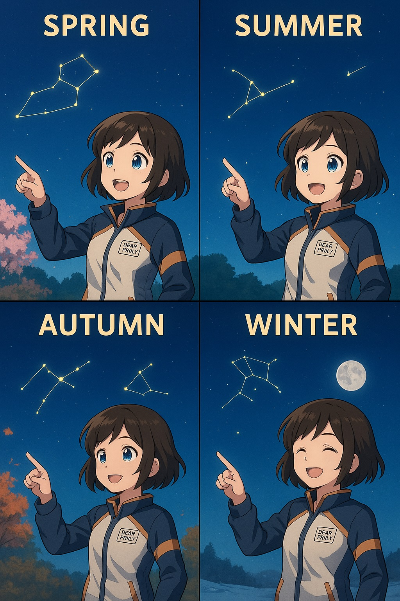
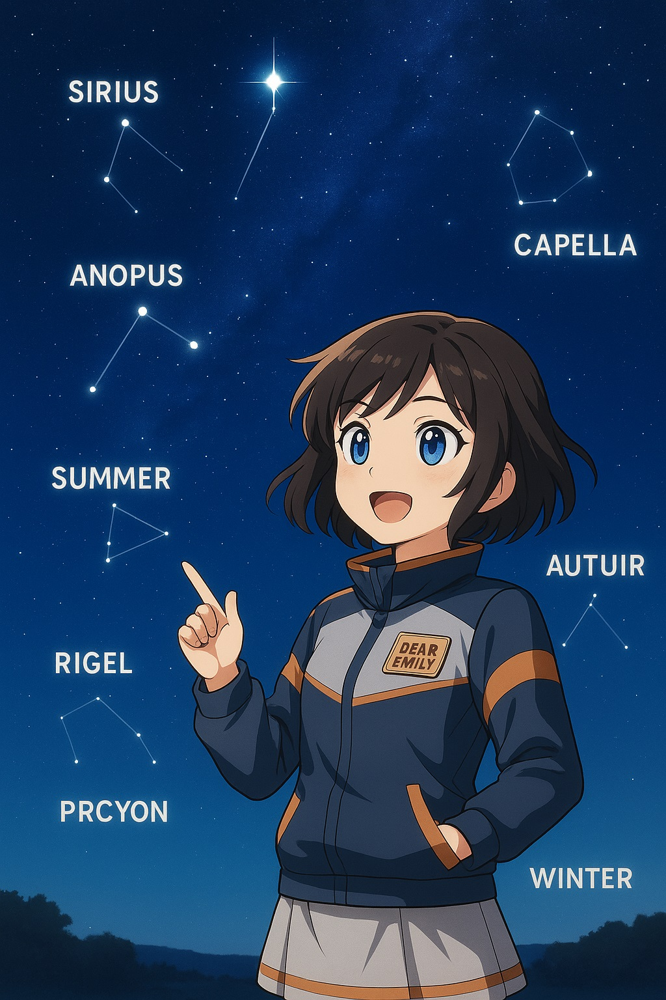
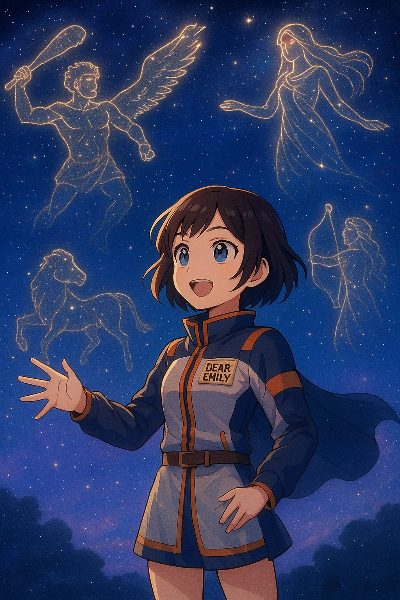

星座を知ろう｜星の名前と神話の扉を開く
1. プロローグ：星の形に意味はあるの？
静かな夜が訪れました。高層ビルの隙間から見える空には、先日アプリで教えてもらったオリオン座が瞬いています。エミリーは温かいココアを片手に、ベランダに出て、じっと夜空を見上げていました。
「オリオン座って…狩人の星座なんだよね？ でも、あれが狩人に見えるって、どういうこと？」
アプリで表示されるオリオン座のイラストは、確かに凛々しい狩人の姿をしていました。しかし、夜空に輝く星の点と点を結んでみても、どうもその形がピンとこない。エミリーの頭の中には、新たな疑問が浮かび上がっていました。なぜ、はるか昔の人は、ばらばらに見える星の集まりに、動物や神様の形を見出したのだろう？そして、そこに物語を与えたのだろう？
星の点と点を結んで形を作る「星座」。そこには、古代の人々の豊かな想像力と、壮大な物語が込められています。彼らはなぜ、星に特別な意味を見出したのでしょうか。
エミリーの心に、新たな疑問と好奇心の扉が開かれようとしていました。それは、単に星の名前を知るだけでなく、人類が夜空とどのように向き合ってきたのか、その深い歴史と文化に触れる旅の始まりでもあったのです。
---2. 星座とは何か？｜夜空を旅するための地図
「星座って、たくさんの星が集まってできてるんでしょう？でも、なんであんなにたくさんの種類があるんだろう？」
エミリーは、星座アプリを眺めながら首を傾げました。たくさんの線で結ばれた星の絵が、彼女の好奇心をくすぐります。
星座とは、夜空に輝く星々を、特定のパターンでグループ化し、それに名前や物語を与えたものです。まるで、広大な夜空に描かれた地図の目印のような役割を果たしています。現代では、国際天文学連合（IAU）によって、88個の星座が正式に定められています。この88個の星座は、地球上のどこからでも観測できるように、空全体を分割して割り当てられています。これによって、どの国の人も、どの時代の人も、同じ星の並びを同じ名前で呼ぶことができるようになったのです。
■ 星座のはじまり
では、なぜ人々は星に形や名前をつけたのでしょうか？その歴史は非常に古く、人類の文明が始まった頃にまで遡ります。
古代バビロニア、ギリシャ、中国、そして日本…世界中の多くの文明が、それぞれ独自の**「星座文化」**を持っていました。彼らは、夜空の星の並びを観察し、そこに自分たちの文化や信仰に基づいた意味を見出しました。
その主な理由は、大きく分けて三つあります。
- 空を記録し、時を知るため：昔の人々にとって、夜空は唯一無二の「時計」であり「カレンダー」でした。特定の星座が特定の季節に昇ることから、農耕の時期を知り、季節の変化を予測するために利用されました。星の動きを記録することで、暦を作り、生活のリズムを整えていたのです。エジプトのナイル川の氾濫（はんらん）時期をシリウスの出現で知ったように、星は生存に不可欠な情報源でした。
- 神話や信仰を結びつけるため：夜空は、古代の人々にとって神聖な場所であり、神々が住まう世界と考えられていました。彼らは、自分たちの信仰する神々や英雄、動物たちの物語を星の並びに投影し、天空に永遠の物語を描き出しました。星座は、単なる目印ではなく、彼らの世界観や哲学を表現する媒体だったのです。
- 航海の目印とするため：船乗りたちは、広大な海の上で方角を見失わないよう、星の並びを頼りに航海しました。特に、常に同じ位置に見える北極星は、進むべき方向を示す重要な道標となりました。星座は、まさに夜空を旅するための「地図」であり、人々を目的地へと導く羅針盤（らしんばん）の役割も果たしていました。
夜空を見て、「あの星の並びが弓に見える」「あの星は獅子のたてがみのようだ」と想像することは、人間の根源的な美意識と知性の証でもあります。エミリーがオリオン座に興味を持ったように、私たちは本能的に、混沌（こんとん）としたものの中に秩序や意味を見出そうとするのです。星座は、そうした人間の知的好奇心と想像力が生み出した、天空の芸術作品と言えるでしょう。
---3. 今夜の星座ガイド｜季節で変わる夜空の模様
エミリーが宙ガールになろうとしていたのは、ちょうど春の終わり。少しずつ夜空の顔ぶれが変わり始める季節です。
「春の星座って、どんなのがあるんだろう？」
彼女は、星座アプリを開き、今日見える星座を調べてみました。季節によって夜空の景色がガラリと変わることに、エミリーは驚きました。まるで、四季の移ろいに合わせて、夜空が新しい物語を演じているかのようです。
この時期、夜9時ごろに見える主な星座は以下の通りです。
| 季節 | 星座名 | 特徴・神話 |
|---|---|---|
| 春 | しし座 | ライオンの形をした星座です。古代ギリシャの英雄ヘラクレスが退治した、ネメアの森の化け物獅子に由来すると言われています。この時期、堂々とした姿で夜空を駆けているように見えます。 |
| 夏 | さそり座 | 燃えるような赤い星アンタレスが輝く、サソリの姿をした星座。ギリシャ神話では、オリオンを刺し殺したとされるサソリが天に上げられたものです。夏の夜空の低い位置に、その長い尾を引くように見えます。 |
| 秋 | ペガスス座 | 翼を持つ天馬（てんま）の星座です。ギリシャ神話の英雄ペルセウスがメドゥーサを倒した際に、その血から生まれたとされています。秋の夜空に広がる大きな四辺形は「ペガススの四辺形」と呼ばれ、見つけやすい目印となります。 |
| 冬 | オリオン座 | 巨大な狩人の姿をした星座で、冬の星座の王様とも呼ばれます。ベテルギウスとリゲルという二つの明るい星を持ち、三ツ星がその特徴的なベルトを形作っています。エミリーが最初に魅せられた星座ですね。 |
🌌おすすめ：
星座アプリを使って、実際に空の星の形を指でなぞってみましょう。線と線をつないでいくと、徐々に物語が浮かび上がってくるような感覚になるはずです。最初は「本当にこれ、獅子に見える？」と思うかもしれませんが、何度も見ているうちに、不思議とその形が頭に焼き付いてきます。それはまるで、幼い頃に絵本を読んでもらう時のように、想像力が刺激される体験です。
---4. 星に名前があるって知ってた？
夜空にきらめく星々には、一つ一つに個性的な名前が付けられています。
「星にも名前があるなんて、なんだか感動しちゃうな…」
エミリーは、スマートフォンを空にかざし、オリオン座の明るい星々をタップしてみました。すると、「ベテルギウス」「リゲル」といった、異国の響きを持つ名前が次々と現れます。これらの名前は、その多くがギリシャ語、アラビア語、ラテン語を起源としており、その語源もまた、神秘的で奥深いものです。星の名前を知ることは、彼らが誕生した文化の歴史に触れることにもつながります。
■ 有名な恒星とその意味
いくつか有名な恒星とその名前の意味を見てみましょう。
| 星の名前 | 星座 | 意味・由来 |
|---|---|---|
| ベテルギウス | オリオン座 | アラビア語の「イブト・アル・ジャウザ（巨人の脇の下）」に由来すると言われています。その名の通り、オリオン座の右肩（地球から見て左上）に位置し、赤く輝く特徴的な星です。エミリーが最初に見つけた時、「狩人の肩にあるこの赤っぽい星が、ベテルギウスか！」と嬉しそうに微笑みました。 |
| シリウス | おおいぬ座 | ギリシャ語で「焼き焦がすもの」「光り輝くもの」という意味を持ちます。夜空で最も明るい星として知られ、冬の夜空にひときわ強く輝きます。古代エジプトでは、この星がナイル川の氾濫を告げる「夏の大犬星」として非常に重要視されていました。 |
| アルタイル | わし座 | アラビア語で「飛翔する鷲」を意味します。夏の夜空に輝く、明るい白い星で、日本では七夕伝説の織姫星と彦星（わし座のアルタイルとこと座のベガ）のうち、彦星として親しまれています。天の川を挟んでベガと向かい合う姿は、まさにロマンチックな物語を想起させます。 |
| スピカ | おとめ座 | ラテン語で「穀物の穂先」を意味します。おとめ座の最も明るい星で、春の夜空に白く輝きます。古代の人々にとって、豊作を祈る農耕の象徴として崇められていました。この星が見える季節は、種まきや収穫の時期を知る目安にもなっていました。 |
星の名前を知ることで、ただの光の点が、遥か遠くの宇宙に存在する個性を持った存在として感じられるようになります。それは、まるで新しい友だちに出会うような、発見の喜びをエミリーに与えてくれました。
---5. 星座神話｜空に描かれた物語
星座の世界には、数えきれないほどの神話が込められています。エミリーは、星の名前を調べると同時に、それらの星が属する星座の神話も読み漁るようになりました。
「それぞれの星座に、こんなに奥深い物語があるなんて…」
彼女は、図書館で借りてきた星座の神話の本を広げ、ページをめくるたびに、古代の人々の豊かな想像力に驚かされました。夜空は、単なる天文現象の場ではなく、「人間の願いや恐れ、愛、勇気」といった普遍的な感情が投影された、壮大な舞台だったのです。
■ エミリーが出会った神話たち
オリオン座
エミリーが最初に魅了されたオリオン座の物語は、ギリシャ神話に登場する、狩りの名手オリオンの悲劇的な生涯を描いています。オリオンは非常に美しく、狩りの腕も天才的でしたが、その自信過剰な性格が災いし、大地の女神ガイア（またはアルテミス）に怒りを買い、サソリ（さそり座）に刺されて命を落とします。しかし、その功績を称えられ、天空に上げられ星座になったと言われています。
この神話を知ってから、エミリーは冬の夜空にオリオン座とさそり座が同時に見えないことに気づきました。オリオンとサソリは宿敵（しゅくてき）であるため、同じ空には決して現れないのだと語り継がれているのです。この、星の配置と神話が結びついていることに、エミリーは深い感動を覚えました。
おとめ座とスピカ
春の夜空に輝くおとめ座は、豊穣の女神デメテルの娘、ペルセポネの神話が元になっています。ペルセポネが冥界（めいかい）の王ハデスにさらわれたため、母デメテルは深い悲しみに暮れ、地上には作物が育たなくなってしまいました。ゼウスの仲裁により、ペルセポネは一年のうち一定期間を地上で過ごせることになりますが、彼女が冥界にいる間は地上は冬となり、戻ってくると春が訪れる、という物語です。おとめ座のスピカは、この女神が手に持つ「穀物の穂先」を表していると言われています。この神話は、季節の移り変わり、そして生命の再生という、自然の摂理（せつり）を物語っています。
北斗七星と中国神話
おおぐま座の一部である北斗七星は、日本では柄杓（ひしゃく）の形としておなじみです。西洋の神話とは異なり、中国では道教の信仰と深く結びついていました。北斗七星は、天の中心に位置し、死後の魂を導くとされる「太一（たいいち）」の象徴であり、人々の運命を司る星として崇（あが）められていました。また、その並びが時期によって向きを変えることから、時間の流れや暦（こよみ）を定める基準にも使われました。この星の動きを見て、昔の人々は農作業の時期を決めたり、国の政治を動かしたりしたのです。
🌠ワンポイント：
西洋神話と東洋神話では、同じ星の並びでもまったく異なる物語が語られていることがあり、その違いを比較するのも非常に興味深いものです。例えば、西洋の星座はギリシャ・ローマ神話が中心ですが、東洋では中国の思想や伝説が強く反映されています。これらの神話は、後の占星術や陰陽道（おんみょうどう）といった思想にもつながっており、星が単なる光の点ではなく、人々の生活、文化、信仰に深く根ざしていたことが分かります。
---6. エミリーのノート：星に導かれて
星座の神話を学ぶたびに、エミリーの心は深く揺さぶられました。彼女は、その感動と気づきをノートに書き留めました。
📝エミリーのメモより
「今日、オリオン座の三ツ星が、まるで夜空にまっすぐ伸びた『空の道しるべ』みたいに見えた。神話を知る前はただの星の並びだったのに、今は狩人のベルトだと思うと、なんだか勇気をもらえる気がする。
それに、星の神話って、昔の人が空に書いた『ラブレター』なんだって気づいた。喜びや悲しみ、希望や絶望…人間の感情のすべてが、星々を通して語り継がれている。それは、時代を超えて私たちに語りかけてくるメッセージみたいだ。
私も、自分だけの『星の物語』を探してみたいな。夜空を見上げて、自分だけの意味を見つけたり、誰かにとって大切な物語になるような星を見つけられたら、素敵だろうな。夜空は、本当に奥が深い。知れば知るほど、もっと知りたくなる。この旅は、まだまだ始まったばかりだ。」
エミリーのノートには、星と神話が彼女の心に与えた深い影響が綴られていました。彼女は、星を見上げることが、単なる趣味ではなく、自分自身と向き合い、内面を豊かにする時間になっていることに気づき始めていました。
---7. 次のステップ：月と暦の秘密を知ろう｜宇宙とわたしをつなぐ時間のしくみ

エミリーが星座の物語に魅了されたように、夜空は私たちに無限の知識と感動を与えてくれます。しかし、美しい星空を楽しむためには、少しだけ準備が必要です。
次回は、宙ガールへの旅の第三歩、ステップ3「月と暦の秘密を知ろう｜宇宙とわたしをつなぐ時間のしくみ」です。
星座をより見つけやすい時間帯や、方角の見つけ方、そして都会の夜空で星を見る上で避けて通れない光害（こうがい）の影響、さらに観測に最適な天気のチェック方法などを学びます。
🧭 星を見つける旅は、「いつ、どこで、どう見るか」でもっと楽しくなる！
最適な条件で星空を眺めるための、実践的なヒントをエミリーと一緒に学びましょう。
---8. 宙ガールにおすすめの星座本やグッズ
エミリーが星座の知識を深めるために使ったように、あなたの宙ガールライフをさらに充実させるためのアイテムをご紹介します。
🌟 宙ガールにおすすめの星座本やグッズはこちら：
- 星座図鑑（大人向けビジュアルガイド）：美しい写真やイラストで、88星座すべての情報が網羅されています。神話や由来、見つけ方まで詳しく解説されており、眺めているだけでも楽しい一冊です。 → 楽天ブックスで見る → Amazonで見る
- 星空ノート（観察記録用）：観測した日付、場所、天候、見えた星座や星、感じたことなどを自由に書き込める専用ノートです。自分だけの「星空の記録」を残すことで、観測がより楽しくなります。 → おすすめノートをチェックする
- 星座カード（神話付き）：それぞれの星座の絵と、その背景にある神話が簡潔にまとめられたカードセットです。手軽に持ち運べ、夜空を見上げながら神話を読み、星と物語を結びつけるのに最適です。 → 星座カードをゲットする
これらのアイテムは、あなたの星空への理解を深め、より豊かな体験を提供してくれるでしょう。
9. まとめ：星を見上げる時間が、あなたを変える

星座を知ることは、宇宙との距離をぐっと縮めること。そして、そこに込められた名前や神話に触れると、夜空はただの「点」ではなく、記憶と文化と夢が詰まった、壮大な絵本になります。
エミリーは、星を見上げることが、自分自身の内面と向き合う大切な時間になっていることに気づきました。都会の喧騒（けんそう）から離れて、夜空に広がる無限の物語に触れることで、心が落ち着き、明日への活力が湧いてくるのを感じています。
あなたもエミリーと一緒に、「星の物語」を旅しませんか？夜空はいつも、私たちに優しく語りかけてくれています。
次はステップ3「月と暦の秘密を知ろう｜宇宙とわたしをつなぐ時間のしくみ」です。ご希望があれば続けて作成いたします。